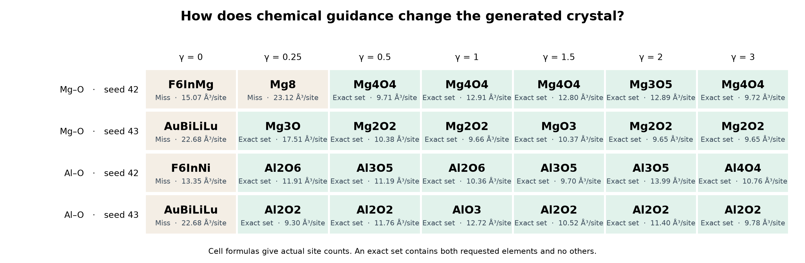
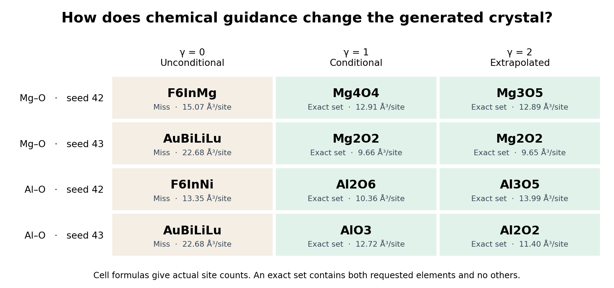
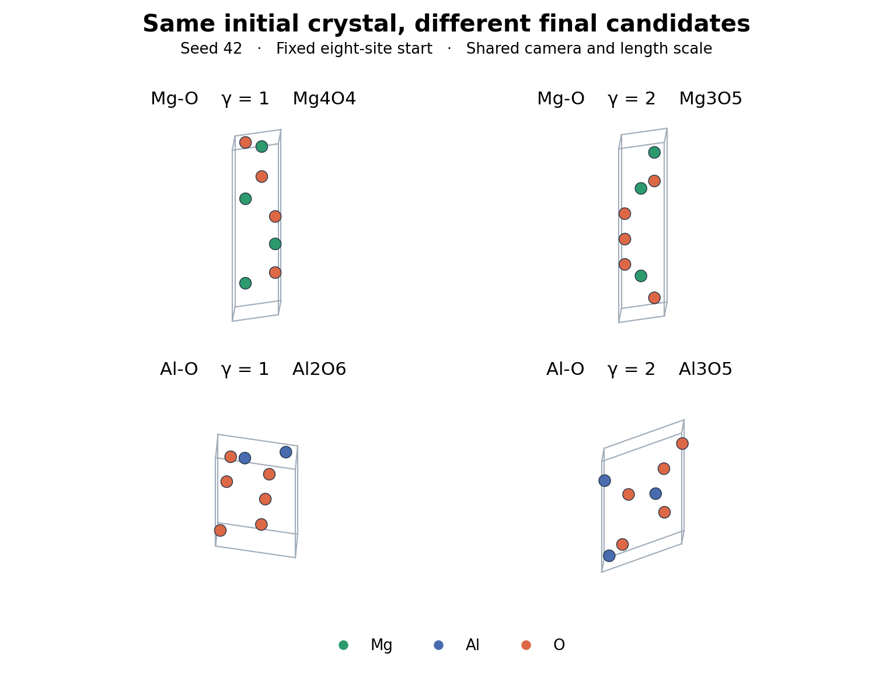

七档引导强度的配对扩展
在原有 0、1、2 之外，使用相同的预训练权重、默认 1,000 级 predictor–corrector、批量 1、种子 42/43，以及 Mg–O、Al–O 两个目标，实跑 γ = 0.25、0.5、1.5、3。新增 16 个终点。合并后的 28 个终点包含两组不同的已保存初始状态，逐种子比较的 14 个首帧哈希完全一致。每个终点有独立 CIF 和 2,000 条采样记录。逐样本结果 · 模型配置、原始轨迹、CIF 和逐次日志（课程仓库，需权限）
| γ | 0 | 0.25 | 0.5 | 1 | 1.5 | 2 | 3 |
|---|---|---|---|---|---|---|---|
| 精确命中目标元素集合的候选数（每档 4 次） | 0 | 3 | 4 | 4 | 4 | 4 | 4 |
| Mg–O，种子 42，氧位点数（共 8） | 0 | 0 | 4 | 4 | 4 | 5 | 4 |
| Mg–O，种子 43，氧位点数（共 4） | 0 | 1 | 2 | 2 | 3 | 2 | 2 |
为什么 γ = 0.25 有一个失败？ 种子 42 指定 Mg–O，却得到全 Mg 的八位点晶胞。条件分支惩罚目标集合以外的元素，集合之内每种元素仍须在随机采样中至少被选中一次，才能满足这里的命中标准。固定该初态，γ = 0.5 得到 Mg₄O₄。继续增大引导有什么变化？ 该初态在 γ = 2 得到 Mg₃O₅，在 γ = 3 又得到 Mg₄O₄。达到目标元素集合之后，提高 γ 仍可能改变化学计量，但观察到的氧含量对 γ 并非单调。两组独立起点、两个指定体系足以逐例解释这一机制；要估算总体命中率或最优 γ 值，还需要更多独立起点。

为了重建本轮结果，使用 scripts/run_chemical_control.py --workers 4 --scales .25 .5 1.5 3 --output-root runs/training_free_control_extended；合并分析使用 scripts/analyze_chemical_control.py --extra-raw runs/training_free_control_extended --output analysis/training_free_control_extended --scales 0 .25 .5 1 1.5 2 3（输出目录须为新目录）。新增运行在 HKUST 的 RTX A6000 GPU 2 上并发，进程端到端时间含共享 GPU 上的调度开销。source_data.zip 内保存两批 sweep 总日志和 28 份逐次 stdout。两条退化中间晶胞记录均来自最初三档，56,000 条原始记录全部保留，28 个最终 CIF 均通过与独立最终 EXTXYZ 的匹配检查。校验摘要（课程仓库，需权限）
我们用官方已训练好的 chemical_system 权重，分别要求模型生成 Mg–O 或 Al–O 元素体系。目标只规定元素种类，镁、铝或氧各有几个位点由模型生成。两种目标、三种引导强度和两个种子组成 12 次实际推理。冷启动、采样与保存均在 HKUST RTX A6000 GPU 4 上运行。每个种子的六次采样从相同的已保存初始晶体状态出发。
结果

| 目标元素 | 种子 | γ = 0 | γ = 1 | γ = 2 |
|---|---|---|---|---|
| Mg–O | 42 | F₆InMg | Mg₄O₄ | Mg₃O₅ |
| Mg–O | 43 | AuBiLiLu | Mg₂O₂ | Mg₂O₂ |
| Al–O | 42 | F₆InNi | Al₂O₆ | Al₃O₅ |
| Al–O | 43 | AuBiLiLu | AlO₃ | Al₂O₂ |
| 完全命中 | 0/4 | 4/4 | 4/4 |
同一个八位点初态下，给定 Mg–O 并开启条件引导，模型在 γ = 1 时给出 4 Mg + 4 O，在 γ = 2 时给出 3 Mg + 5 O。两者都满足元素要求，比例却不同。改给 Al–O，相同初态分别得到 2 Al + 6 O 和 3 Al + 5 O。两种非零强度在这四个案例上已全部命中，提高 γ 对命中数没有进一步增益。

图中化学式列出输出晶胞的实际位点数。“完全命中”要求两种目标元素都出现且没有其他元素。例如，对于 Mg–O，Mg₄O₄ 与 Mg₂O₆ 都命中；只有 Mg 的晶胞未命中。体积来自独立最终结构的晶胞行列式绝对值除以位点数，单位 ų/位点。数值用于比较生成输出的几何尺度。每一格均保留生成原件及可定位的独立最终结构。逐次结果 · 检查摘要（课程仓库，需权限）
为什么要设置 γ = 0？
固定版本按 unconditional + γ × (conditional − unconditional) 组合模型对位置、晶胞与元素的输出；元素通道组合的是 logits。γ = 0 只调用无条件分支，γ = 1 只调用条件分支，γ = 2 将两者之间的差值放大。三种设置共用同一份已训练条件模型的权重。官方生成入口在条件分支对目标以外的元素施加极大负 logit，因而这里测得的是条件模型与元素掩码的联合效果。主实验回答“实际生成入口能否按要求给出两种元素”。下节额外关闭按目标筛元素的步骤，检验学习到的条件表示单独保留时的表现。引导公式与分支 · 官方生成入口 · 元素掩码
生成种子决定初始随机数。我们按种子比较全部六次运行的第一条原始 EXTXYZ 记录，对位点元素、位置、晶胞矩阵和周期性标志逐项序列化。相同种子在六个条件下具有相同初态哈希，两个种子的初态互异。GPU 浮点计算允许不同运行随后分开。γ = 0 的两个标签提供相同设置下的负对照，分母中的四次运行来自两个独立种子。这个小样本展示控制方式如何影响生成，材料的动力学稳定性需要独立物理计算。官方复现说明
主实验 12 个最终 CIF 均与各自独立 EXTXYZ 最终结构匹配。24,000 条采样记录中有两个已保存中间晶胞的行列式为零，分别来自 Mg–O、种子 43 的 γ = 0 记录 396 与 γ = 2 记录 893。原始档案保留全部记录，演示仅从非退化晶胞中抽帧。该现象说明中间记录的三维几何可能退化，研究最终物理性质仍须从已明确标识的最终候选出发。主实验在同一张 GPU 上双进程运行，首个进程开始至最后一个结束约 12 分 02 秒，单进程端到端耗时范围 110.0–129.5 秒。
如果保留条件表示，移除按目标筛元素的步骤呢？
额外四次运行使用相同权重与默认采样器，固定 Mg–O 目标、相同两个种子与 γ = 1、2。模型照常读取 Mg–O 条件表示，在生成元素 logits 后只施加官方全局支持元素限制。我们在每次运行核实条件分支已启用，抽查目标以外的 Si logit 在这一步前后逐值相等。四次均有 2,000 次对该函数的调用。每组的第一帧与主实验的 γ = 0 和对应非零强度第一帧逐字段一致。干预代码（课程仓库，需权限） · 逐次记录与分支检查（课程仓库，需权限）
| 种子 | γ | 完整条件模型 | 仅保留条件表示与全局筛选 | 后者的氧位点比例 |
|---|---|---|---|---|
| 42 | 1 | Mg₄O₄ | Mg₅O₃ | 3/8 |
| 42 | 2 | Mg₃O₅ | Mg₄O₄ | 4/8 |
| 43 | 1 | Mg₂O₂ | Mg₂O₂ | 2/4 |
| 43 | 2 | Mg₂O₂ | MgO₃ | 3/4 |
移除按目标筛元素的步骤后，γ = 1、2 分别仍有 2/2 个候选包含且只包含 Mg 与 O，对应 γ = 0 的两次 Mg–O 对照为 0/2。在本次四个实例中，学习到的条件表示与引导足以得到所需元素集合，四次中有三次的输出元素比例与完整配置不同。重复采样本身也有数值变化，两个种子的结果只能作为本次观察。四次的独立最终 CIF 均匹配，8,000 条原始记录均具有有限坐标与非退化晶胞。两进程共享 GPU 4，首个启动至全部结束约 3 分 48 秒，四个进程累计耗时 453.4 秒。实验表 · 分布对照图 · 检查摘要（课程仓库，需权限）

查看与复现
- 原始档案（课程仓库，需权限） 保存全部 12 次运行的
run_config.json、status.json、轨迹 ZIP、独立最终结构 EXTXYZ 和 CIF ZIP。轨迹 ZIP 各含 2,000 条存储记录，对应 1,000 个噪声级，每级一次 corrector；记录序号用于标记采样进度。每次运行原始文件的 SHA-256 见该次状态文件。 - 动画数据（课程仓库，需权限） 从每条轨迹的有效三维记录中均匀选取 60 帧，保留原始序号。每帧的
cell为行向量晶胞，positions为笛卡尔坐标，单位 Å。unresolved_site_indices标出模型的未确定元素位点，最终结构从独立输出读取。 - 推理脚本（课程仓库，需权限） 固定模型、代码与配置身份，列出全部种子、条件和引导强度。每次均按官方默认预测器、校正器、1,000 个噪声级和 batch size 1 运行。两个进程同时共享指定的显卡，每个运行的耗时包含初始化和导出，可用于了解本次资源成本。
- 分析脚本（课程仓库，需权限） 校验原始文件哈希、各帧的数值和位点数、最终 EXTXYZ 与 CIF 的周期等价性及同一种子下的初始状态，生成表格、图和展示帧。
在 members/tk/ 下执行。推理环境复用已有安装说明（课程仓库，需权限）。将固定 revision 中的 checkpoints/chemical_system/config.yaml 与 checkpoints/chemical_system/checkpoints/last.ckpt 放到 external/models/ 中对应子目录。权重 SHA-256 为 4ad21d977c2b776a31c92498c4d1c88d3e1e286deeb941e997af8e082310b80e。本次从 HF 镜像按固定 revision 下载，再与官方代码仓库 Git LFS 指针及配置 blob 核对。官方权重快照
CUDA_VISIBLE_DEVICES=4 OMP_NUM_THREADS=2 OPENBLAS_NUM_THREADS=2 MKL_NUM_THREADS=2 \
external/mattergen/.venv/bin/python scripts/run_chemical_control.py --workers 2
external/mattergen/.venv/bin/python scripts/analyze_chemical_control.py
# 完成上述主实验后，运行同种子 Mg–O 干预。
CUDA_VISIBLE_DEVICES=4 OMP_NUM_THREADS=2 OPENBLAS_NUM_THREADS=2 MKL_NUM_THREADS=2 \
external/mattergen/.venv/bin/python scripts/run_embedding_only.py
external/mattergen/.venv/bin/python scripts/analyze_embedding_only.py仅重做分析时，可将原始档案解压到新的目录，再向分析脚本传入 --raw <解压目录> --output <新输出目录>。